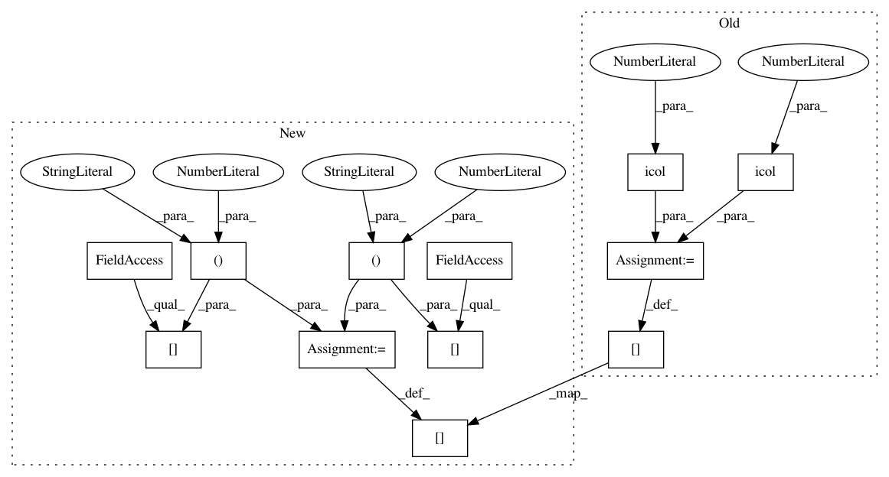

556bfe20bd5f08b1f841296aca064f126080cfd2,nilmtk/metrics.py,,f1_score,#Any#Any#,191
Before Change
for aligned_states_chunk in aligned_meters:
aligned_states_chunk.dropna(inplace=True)
aligned_states_chunk = aligned_states_chunk.astype(int)
score = sklearn_f1_score(aligned_states_chunk.icol(0),
aligned_states_chunk.icol(1))
scores_for_meter = scores_for_meter.append(
{"score": score, "num_samples": len(aligned_states_chunk)},
ignore_index=True)
// Calculate weighted mean
num_samples = scores_for_meter["num_samples"].sum()
if num_samples > 0:
scores_for_meter["proportion"] = (
scores_for_meter["num_samples"] / num_samples)
avg_score = (
scores_for_meter["score"] * scores_for_meter["proportion"]
).sum()
else:
warn("No aligned samples when calculating F1-score for prediction"
" meter {} and ground truth meter {}."
.format(pred_meter, ground_truth_meter))
avg_score = np.NaN
f1_scores[pred_meter.instance()] = avg_score
return pd.Series(f1_scores)
After Change
for aligned_states_chunk in aligned_meters:
aligned_states_chunk.dropna(inplace=True)
aligned_states_chunk = aligned_states_chunk.astype(int)
score = sklearn_f1_score(aligned_states_chunk.iloc[:, 0],
aligned_states_chunk.iloc[:, 1])
scores_for_meter = scores_for_meter.append(
{"score": score, "num_samples": len(aligned_states_chunk)},
ignore_index=True)
// Calculate weighted mean
num_samples = scores_for_meter["num_samples"].sum()
if num_samples > 0:
scores_for_meter["proportion"] = (
scores_for_meter["num_samples"] / num_samples)
avg_score = (
scores_for_meter["score"] * scores_for_meter["proportion"]
).sum()
else:
warn("No aligned samples when calculating F1-score for prediction"
" meter {} and ground truth meter {}."
.format(pred_meter, ground_truth_meter))
avg_score = np.NaN
f1_scores[pred_meter.instance()] = avg_score
return pd.Series(f1_scores)
In pattern: SUPERPATTERN
Frequency: 3
Non-data size: 12
Instances
Project Name: nilmtk/nilmtk
Commit Name: 556bfe20bd5f08b1f841296aca064f126080cfd2
Time: 2018-03-18
Author: 10246101+PMeira@users.noreply.github.com
File Name: nilmtk/metrics.py
Class Name:
Method Name: f1_score
Project Name: nilmtk/nilmtk
Commit Name: 556bfe20bd5f08b1f841296aca064f126080cfd2
Time: 2018-03-18
Author: 10246101+PMeira@users.noreply.github.com
File Name: nilmtk/metrics.py
Class Name:
Method Name: mean_normalized_error_power
Project Name: nilmtk/nilmtk
Commit Name: 556bfe20bd5f08b1f841296aca064f126080cfd2
Time: 2018-03-18
Author: 10246101+PMeira@users.noreply.github.com
File Name: nilmtk/metrics.py
Class Name:
Method Name: rms_error_power